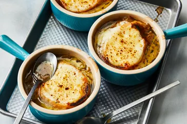

French Onion Soup
Home

Description
This is a French dish made with onions and beef broth.
Ingredients:
- Onions
- Olive oil
- Unsalted butter
- Provolone cheese
- Parmesan chesse
- French bread
- Dried thyme
- Sald and pepper
- Dry sherry
Instructions:
- Gather all ingredients
- Melt butter with olive oil in a pot over medium heat. Add onion to the pot and stir
- Add beef broth, sherry, salt, and pepper and let it simmir for 30 minutes. Preheat oven.
- Place soup into an oven-safe bowl with bread in each bowl. Add provolone cheese and parmesan on top of bread
- Place bowl in preheated oven for 3 minutes
- Serve dish!